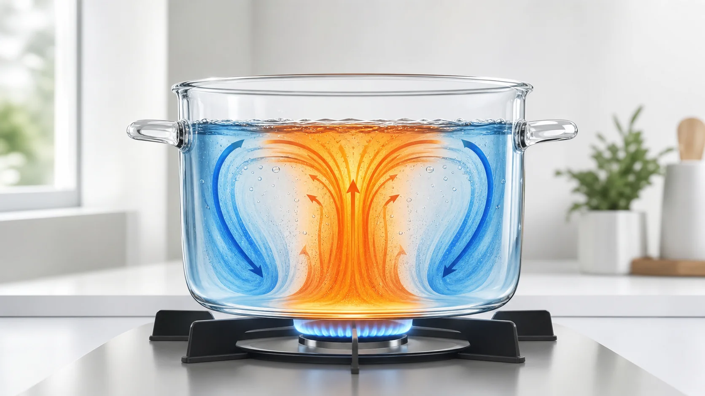
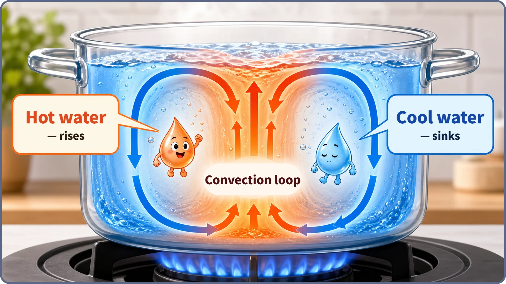
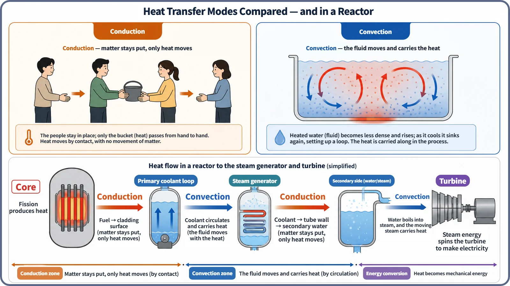

Heat Transfer & Thermal Hydraulics · 131
When Water Starts Spinning on Its Own — The Secret of Convection Heat Transfer
Warm water rises, cool water sinks, and the heat rides along. Convection is the courier that hauls heat out of a reactor core.

Convection is heat transfer in which a fluid itself moves as a mass and carries its heat along. In a pot on the stove, water warmed at the bottom becomes less dense and rises while cooler water sinks, forming a loop on its own (natural convection). Push the fluid with a pump or a spoon and it becomes forced convection, the kind that carries heat out of a reactor core in normal operation.
Why does the water start turning by itself?
Put a pot of water on the stove and watch. Long before it boils, water near the bottom drifts upward, water near the surface sinks, and the whole pot seems to turn slowly in a circle. That is convection.
The water touching the hot bottom warms first. A liquid expands slightly as it heats, so the same mass takes up more room and its density falls. The lighter, warmer water is pushed up by buoyancy, and cooler, denser surface water slides down to replace it. That water is heated in turn, rises, and the ups and downs mesh into one continuous loop. What moves is not just water but the heat carried in that water.

Conduction works differently. There, the particles of a material stay where they are and only energy is handed from neighbor to neighbor, like a bucket brigade passing a bucket down a line. In convection, each person picks up a bucket and walks it over: whole chunks of fluid change position. One question separates the two: what actually moves?
Why stirring the pot heats it faster
Left alone, the water circulates purely through density differences (buoyancy): natural convection, or natural circulation. Stir it with a spoon and it heats faster and more evenly, because your hand acts as a pump. When an outside power source forces a fluid to flow, it is forced convection, or forced circulation.
Natural convection can only produce a limited flow, so where a lot of heat must be moved quickly, pumps or fans take over. In a reactor, large reactor coolant pumps (RCPs) keep pushing coolant (water, in a light water reactor) through the core, as if someone were stirring the pot nonstop. A reactor in normal operation carries its core heat mostly by this forced circulation.
That statement describes large commercial light water reactors (PWRs and BWRs). Some designs, such as certain small modular reactors, use natural circulation as their main normal-operation cooling mode, so it is not an absolute rule.
Putting it into numbers
Convection fits into one short relationship, Newton's law of cooling:
q″ = h × (Ts − T∞)
| Symbol | Meaning | Unit |
|---|---|---|
| q″ | Heat moved per unit area (heat flux) | W/m² |
| h | Convective heat transfer coefficient: how readily heat passes between surface and fluid | W/(m²·K) |
| Ts | Surface temperature (pot bottom, fuel rod surface) | — |
| T∞ | Fluid temperature well away from the surface | — |
The bigger the surface-to-fluid temperature difference and the larger h, the more heat is moved; h generally grows when the fluid flows faster and more vigorously. The equation resembles the conduction law, q″ = −k × (dT/dx), but the conductivity k is a property of the material, while h also depends on how fast the fluid flows and whether the flow is smooth (laminar) or churning (turbulent).
What convection does inside a reactor
Fission heat travels from inside the fuel pellet out to the cladding by conduction. Once it reaches the cladding surface and passes into the flowing coolant, convection takes over: the coolant itself flows and carries the heat away. In a pressurized water reactor (PWR) it carries the heat to the steam generator; in a boiling water reactor (BWR) the steam made in the core goes straight to the turbine. (This is a one-sentence overview; detailed layouts differ by reactor type.)

So how effectively the coolant carries heat, meaning the value of h and the flow rate, bears directly on keeping fuel surface temperatures within safe limits. If the flow drops or convection weakens, the surface temperature rises, and if that goes far enough it connects to boiling and the critical heat flux (CHF).
Neighbors and misconceptions
Convection vs radiation. Radiation travels as electromagnetic waves and works even in a vacuum; convection needs a fluid that actually flows. k vs h. Thermal conductivity k describes conduction through a material; the coefficient h describes convection between a solid surface and a fluid.
"Convection is really just conduction." No: both move heat from hot to cold, but whether the fluid itself travels makes them different mechanisms. "Convection always means hot stuff rising on its own." Natural convection runs on buoyancy alone, but in many installations, reactors included, pump-driven forced convection is the more common kind.
Key takeaways
- Convection is heat transfer in which a fluid moves as a mass and carries its heat along, either on its own through buoyancy (natural) or pushed by a pump (forced).
- Newton's law of cooling, q″ = h × (Ts − T∞): a larger temperature difference and a larger h mean more heat moved.
- In a reactor, coolant convection, mostly pump-driven forced circulation, carries core heat toward the steam generator and turbine.